- 00 开篇词 从“小工”到“专家”，我的软件测试修炼之道.md.html
- 01 你真的懂测试吗？从“用户登录”测试谈起.md.html
- 02 如何设计一个“好的”测试用例？.md.html
- 03 什么是单元测试？如何做好单元测试？.md.html
- 04 为什么要做自动化测试？什么样的项目适合做自动化测试？.md.html
- 05 你知道软件开发各阶段都有哪些自动化测试技术吗？.md.html
- 06 你真的懂测试覆盖率吗？.md.html
- 07 如何高效填写软件缺陷报告？.md.html
- 08 以终为始，如何才能做好测试计划？.md.html
- 09 软件测试工程师的核心竞争力是什么？.md.html
- 10 软件测试工程师需要掌握的非测试知识有哪些？.md.html
- 11 互联网产品的测试策略应该如何设计？.md.html
- 12 从0到1：你的第一个GUI自动化测试.md.html
- 13 效率为王：脚本与数据的解耦 + Page Object模型.md.html
- 14 更接近业务的抽象：让自动化测试脚本更好地描述业务.md.html
- 15 过不了的坎：聊聊GUI自动化过程中的测试数据.md.html
- 16 脑洞大开：GUI测试还能这么玩（Page Code Gen + Data Gen + Headless）？.md.html
- 17 精益求精：聊聊提高GUI测试稳定性的关键技术.md.html
- 18 眼前一亮：带你玩转GUI自动化的测试报告.md.html
- 19 真实的战场：如何在大型项目中设计GUI自动化测试策略.md.html
- 20 与时俱进：浅谈移动应用测试方法与思路.md.html
- 21 移动测试神器：带你玩转Appium.md.html
- 22 从0到1：API测试怎么做？常用API测试工具简介.md.html
- 23 知其然知其所以然：聊聊API自动化测试框架的前世今生.md.html
- 24 紧跟时代步伐：微服务模式下API测试要怎么做？.md.html
- 25 不破不立：掌握代码级测试的基本理念与方法.md.html
- 26 深入浅出之静态测试方法.md.html
- 27 深入浅出之动态测试方法.md.html
- 28 带你一起解读不同视角的软件性能与性能指标.md.html
- 29 聊聊性能测试的基本方法与应用领域.md.html
- 30 工欲善其事必先利其器：后端性能测试工具原理与行业常用工具简介.md.html
- 31 工欲善其事必先利其器：前端性能测试工具原理与行业常用工具简介.md.html
- 32 无实例无真相：基于LoadRunner实现企业级服务器端性能测试的实践（上）.md.html
- 33 无实例无真相：基于LoadRunner实现企业级服务器端性能测试的实践（下）.md.html
- 34 站在巨人的肩膀：企业级实际性能测试案例与经验分享.md.html
- 35 如何准备测试数据？.md.html
- 36 浅谈测试数据的痛点.md.html
- 37 测试数据的“银弹”- 统一测试数据平台（上）.md.html
- 38 测试数据的“银弹”- 统一测试数据平台（下）.md.html
- 39 从小作坊到工厂：什么是Selenium Grid？如何搭建Selenium Grid？.md.html
- 40 从小工到专家：聊聊测试执行环境的架构设计（上）.md.html
- 41 从小工到专家：聊聊测试执行环境的架构设计（下）.md.html
- 42 实战：大型全球化电商的测试基础架构设计.md.html
- 43 发挥人的潜能：探索式测试.md.html
- 44 测试先行：测试驱动开发(TDD).md.html
- 45 打蛇打七寸：精准测试.md.html
- 46 安全第一：渗透测试.md.html
- 47 用机器设计测试用例：基于模型的测试.md.html
- 48 优秀的测试工程师为什么要懂大型网站的架构设计？.md.html
- 49 深入浅出网站高性能架构设计.md.html
- 50 深入浅出网站高可用架构设计.md.html
- 51 深入浅出网站伸缩性架构设计.md.html
- 52 深入浅出网站可扩展性架构设计.md.html
- 测试专栏特别放送 浅谈全链路压测.md.html
- 测试专栏特别放送 答疑解惑第一期.md.html
- 测试专栏特别放送 答疑解惑第七期.md.html
- 测试专栏特别放送 答疑解惑第三期.md.html
- 测试专栏特别放送 答疑解惑第二期.md.html
- 测试专栏特别放送 答疑解惑第五期.md.html
- 测试专栏特别放送 答疑解惑第六期.md.html
- 测试专栏特别放送 答疑解惑第四期.md.html
- 结束语 不是结束，而是开始.md.html
- 捐赠
21 移动测试神器：带你玩转Appium
在上一篇文章中，我介绍了Web App、Native App和Hybrid App三种不同类型的移动应用以及对应的测试设计方法，也介绍了移动应用所特有的专项测试知识。
今天，我就以移动应用的自动化测试为主题，介绍目前主流的移动应用自动化测试框架Appium。Appium 是一个开源的自动化测试框架，支持iOS和Android上Web App、Native App和Hybrid App的自动化测试。
由于基于Appium的移动应用环境搭建相对复杂，虽然网上也有不少教程，但是知识点都比较零碎，而且大多都是基于早期版本的示例，所以我会使用最新版本的Appium Desktop 1.6.2和Appium Server 1.8.1来展开今天的内容：
- 首先，我会展示如何在Mac环境下一步一步地搭建Appium测试环境；
- 接下来，我以iOS为例，实际开发两个测试用例，一个是Native App的测试用例，另一个是Web App的测试用例（因为Hybird App的测试用例其实是类似的，Native App的壳，Web App的内容，所以就不再单独举例子了）；
- 然后，我会在iOS的模拟器上实际执行这两个测试用例（之所以选择iOS模拟器，而不用iOS真机做例子，是因为iOS真机的测试需要用到Apple开发者账号，还需要对被测应用进行签名等，会在环境搭建过程中引入很多额外步骤，而这些步骤对于讲解Appium并没有直接的关系）；
- 最后，当你已经通过实际使用对Appium形成感性认识后，我再来简单介绍一下Appium的内部原理，让你做到知其然知其所以然。
移动应用的自动化测试需求
在开始设计测试用例前，我们首先需要明确要开发的这两个自动化测试用例的具体测试需求。
Native App的测试用例，被测App我选用了Appium官方的示例App，被测App的源代码可以通过“https://github.com/appium/ios-test-app” 下载，然后在Xcode中编译打包成TestApp.app。- 具体的测试需求是输入两个数字，然后点击“Compute Sum”验证两个数字相加后的结果是否正确。
Web App的测试用例，具体需求是在iPhone上打开Safari浏览器，访问Appium的官方主页“http://appium.io”，然后验证主页的标题是否是“Appium: Mobile App Automation Made Awesome”。
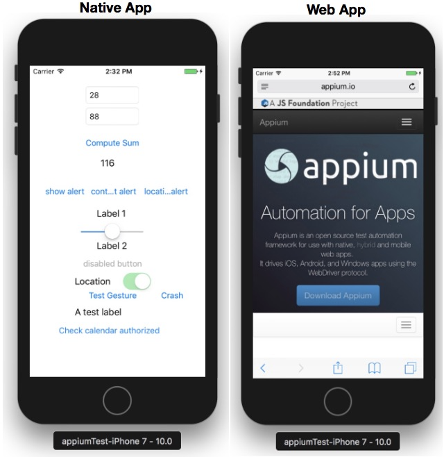
图1 Native App和Web App的GUI界面示例
接下来，我将从最初的环境搭建开始，和你来一起开发iOS上的Native App和Web App的测试用例。首先我们看一下iOS的环境搭建，如果你之前没有接触过这部分内容，你可以跟着我的步骤一步一步来做；而如果你已经比较熟悉Xcode的话，可以跳过这部分内容，直接从“Appium环境搭建”部分看起。
iOS环境搭建
在正式搭建Appium环境前，我们先来搭建iOS开发环境：
- 首先，下载安装Xcode；
- 然后，在Xcode中下载iOS的模拟器；
- 接着，使用Xcode编译打包被测试App；
- 最后，在iOS的模拟器中尝试手工执行这两个测试用例。
在iOS模拟器中，手动执行测试用例的具体操作步骤如下：
启动Xcode，导入ios-test-app下的TestApp.xcodeproj项目。
在Xcode中，打开“Preferences”中的“Components”，完成iOS 10.0 Simulator的下载。
在Xcode的“General”页面，将TestApp的“Deployment Target”设置为10.0，并且将“Devices”设置为“iPhone”，如图2所示。
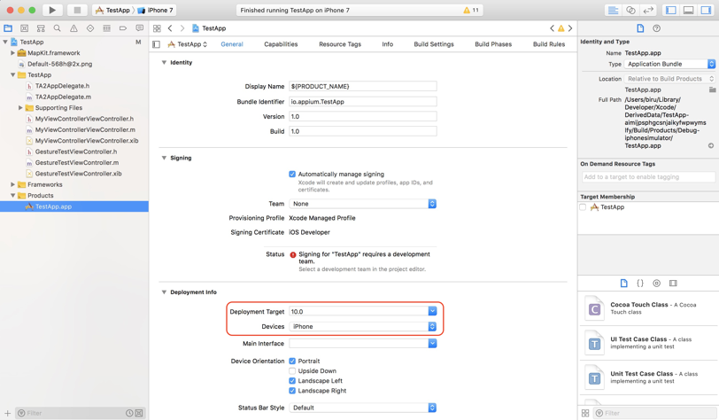
图2 TestApp的General配置
在Xcode中编译运行TestApp，之后系统会自动启动iPhone模拟器，自动完成TestApp的安装，并在iPhone模拟器中自动启动TestApp。
在TestApp中手动执行自定义的加法测试用例。
退出TestApp，然后打开Safari浏览器，在Safari中执行访问Appium官方主页的测试用例。
至此，你已经搭建好了iOS开发环境，并且成功编译打包了TestApp。接下来，我们再一起来搭建Appium测试环境，并尝试在Appium中开发上述的两个测试用例。
Appium测试环境搭建
通过Appium的官方网站下载并安装最新版本的Appium，截止本文写作的时间，最新版本是Appium-1.6.2.dmg。
需要注意的是，早期版本和网上很多教程都建议用命令行的形式启动Appium Server，但在这里我是想强调的是，你完全可以通过界面启动（在Launchpad中找到Appium的图标，点击即可启动），而且新版本的Appium也推荐这个启动方式。通过界面启动，是目前最简单直接的方式。
然后，你需要用命令行“npm install -g appium-doctor”安装Appium的环境诊断工具appium-doctor，用于检查Appium所依赖的相关环境变量以及其他安装包是否都已经配置好了。如果还没有，就需要逐个安装，并根据appium-doctor的提示配置环境变量。
这里，Appium最主要的依赖项主要有：Java、Node.js、Xcode、Carthage、Android SDK、adb等。如果你所有的环境依赖都正常配置的话，你就会看到appium-doctor返回这样一个截图，如图3所示。
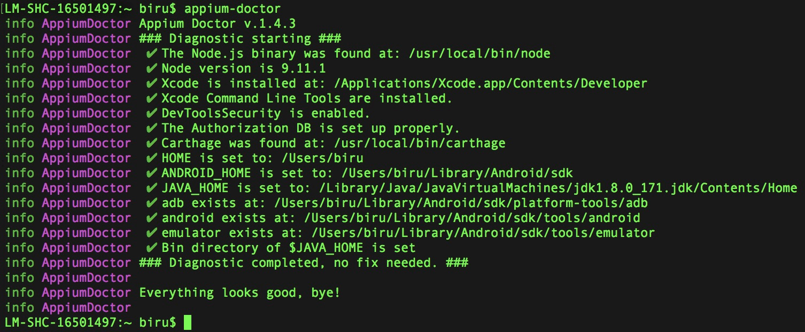
图3 正常配置环境依赖后，appium-doctor返回的截图
按照上面的步骤，配置好Appium的环境依赖后，就可以继续启动Appium Server了。
Appium Inspector的使用
为了后续测试用例的顺利执行，我们可以先来熟悉一下Appium Inspector的使用。Appium Inspector主要是用来协助对界面元素进行定位的工具。
首先，我们来看看如何使用Appium Inspector启动iPhone的模拟器，并在模拟器上运行TestApp，以及如何通过Inspector定位TestApp界面上的元素（了解元素的定位是后续开发自动化脚本的基础）。具体的操作过程如下。
- 通过Appium Server的“Start Inspector Session”按钮，进入Session配置界面。
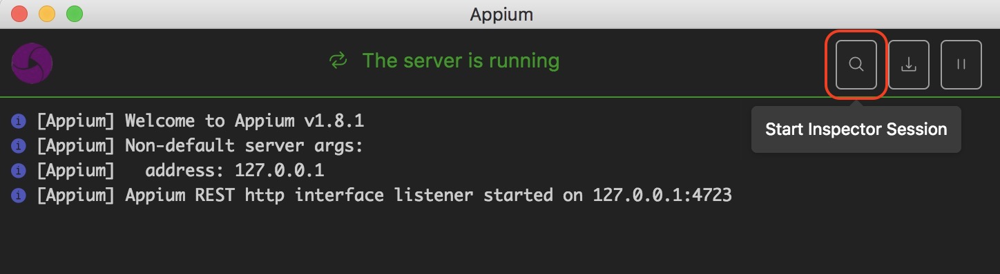
图4 点击“Start Inspector Session”按钮打开Session配置界面
- 在Session配置界面完成必要参数的配置。这里你需要根据选用的移动设备操作系统、模拟器/真机等具体情况来完成参数配置工作。需要配置的参数主要包括：platformName、platformVersion、DeviceName、automationName和app。- 其中，automationName，指自动化测试框架的名称，这里采用了XCUITest；app指被测Native App的安装包路径，这里使用之前Xcode打包生成的TestApp.app，这样启动模拟器时，就会自动把TestApp.app安装到模拟器中。- 其他参数的配置非常简单，我就不再一一展开了。
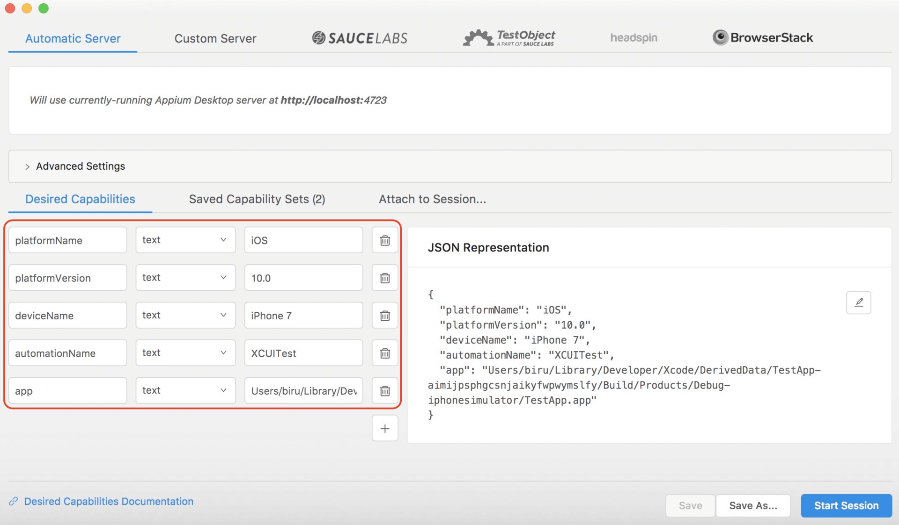
图5 Session配置界面
- 完成配置后，点击Session界面的“Start Session”按钮，启动iPhone模拟器，并在iPhone模拟器中启动TestApp，同时还会打开Inspector窗口。如图6所示。
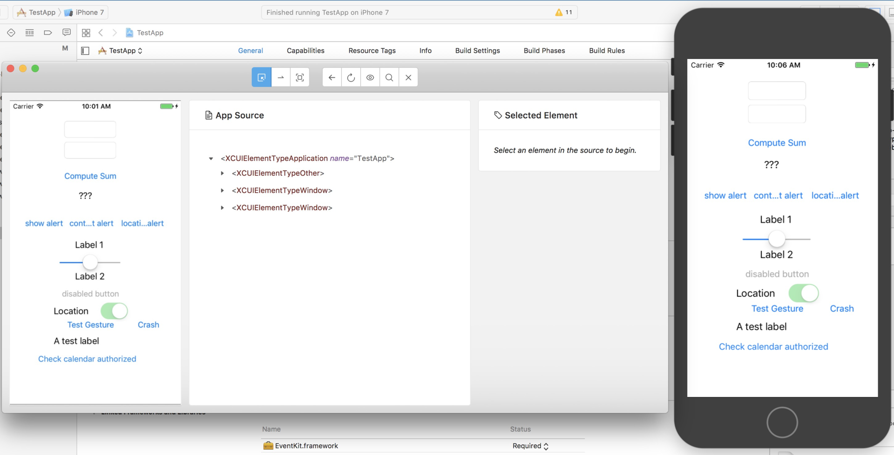
图6 启动Session后的Inspector窗口
- 在Inspector窗口，我们可以利用“Select Elements”功能，通过点击元素显示Native App上的元素定位信息。如图7所示。
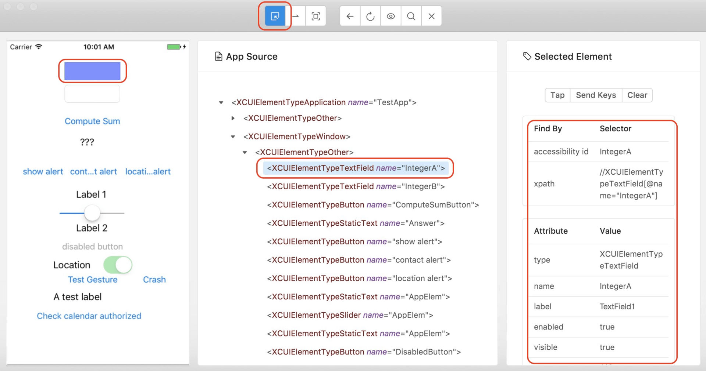
图7 “Select Elements”功能示例
- 在Inspector窗口，可以通过“Recording”功能生成不同语言的自动化脚本。比如在启用了“Recording”功能后，点击“Compute Sum”按钮，就会生成如图8所示的自动化脚本片段。
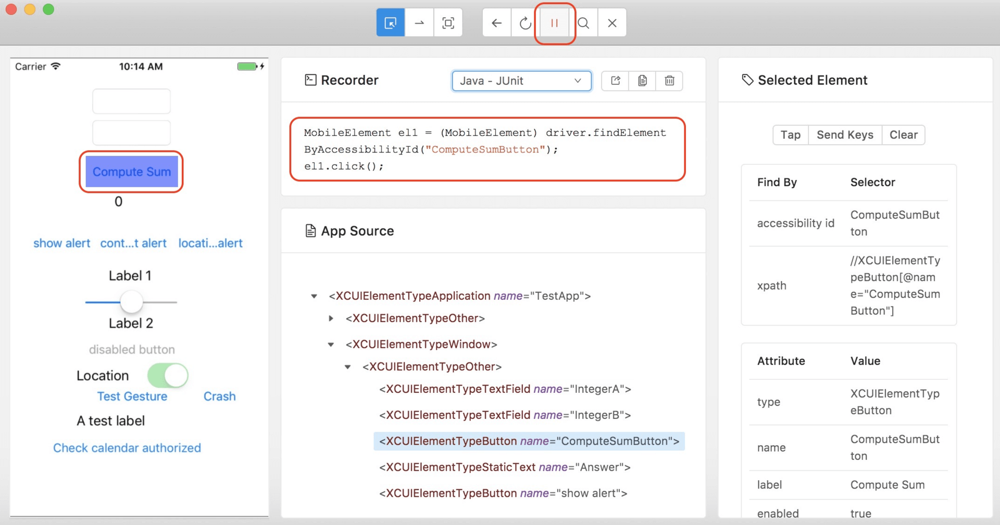
图8 “Recording”功能示例
了解了如何通过Inspector获取元素定位信息的方法之后，我们就来正式开发基于Appium的第一个Web App和第一个Native App的测试用例。
基于Appium开发你的第一个Native App的测试用例
第一步，建立一个空的Maven项目，然后在POM文件中加入如图9所示的依赖。
在这个案例里面，我们会使用TestNG组织测试用例，所以代码的第14行加入了TestNG的依赖。
第19行的java-client是关键，java-client的作用是利用Java代码将测试用例中的操作步骤发送给Appium Server，然后由Appium Server自动完成这些操作。
目前Appium支持多种编程语言，每种语言都有自己的client，比如这里使用Java语言，所以引入了java-client；如果你使用Python语言，那么就需要引用python-client。
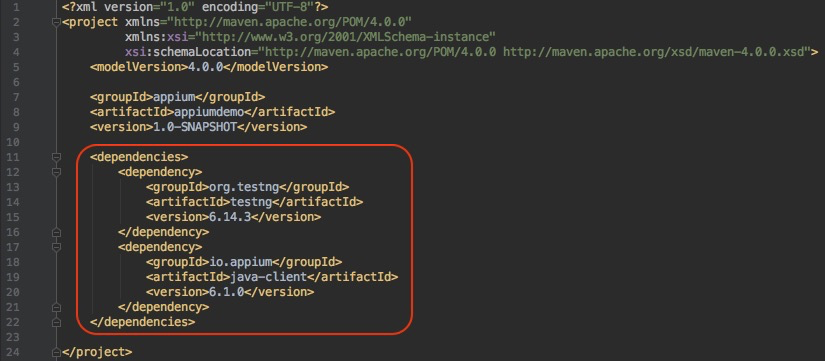
图9 POM文件加入TestNG和java-client的依赖
第二步，创建一个类，并命名为“iOS_NativeApp_DemoTest”，然后按照如图10所示的代码实现这个class。
注意，这里的代码是真实的可执行Java代码，你可以直接拿去使用。
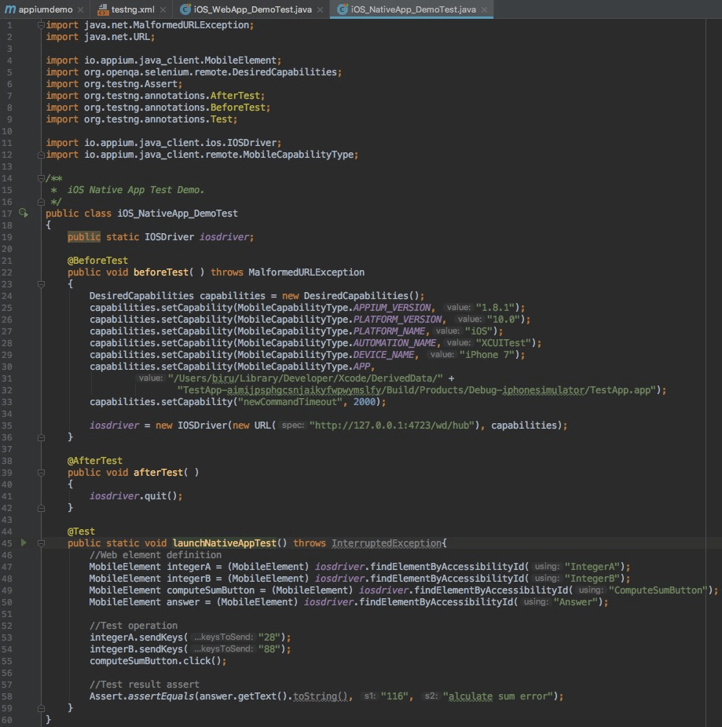
图10 Native App测试用例实例
- 代码第21行的@BeforeTest，第38行的@AfterTest，以及第44行的@Test，都是利用了TestNG的annotation对函数进行标注。- 标有@Test的函数是真正的测试主体，所有测试相关的步骤都放在这个函数中；- 标有@ BeforeTest的函数会在@Test函数之前执行测试的相关准备工作，图中的代码用这个函数完成了DesiredCapabilities的设置，并用该Capabilities构造了iosdriver；- 标有@ AfterTest的函数在@Test函数执行结束后执行，主要用于环境的清理和收尾，图示的代码用这个函数完成了iosdriver的退出操作。
- 代码的第24-33行构造了DesiredCapabilities对象，并对APPIUM_VERSION、PLATFORM_VERSION、PLATFORM_NAME、AUTOMATION_NAME、DEVICE_NAME和APP等参数进行了设置。其中APP的值是被测Native App安装包的绝对路径。
- 代码的第46-58行是测试用例的主体部分，主要分为三部分：- 第47-50行通过iosdriver的findElementByAccessibilityId方法定义了页面上的四个元素，分别是输入参数框A、输入参数框B、计算按钮和加法结果显示框。代码中具体的AccessibilityId可以通过Inspector获取。- 第53-55行通过自定义元素的操作执行加法运算。- 第58行通过断言方法assertEquals验证加法运算的结果。
第三步，为了运行这个TestNG的测试用例，我们需要再添加一个testng.xml文件， 具体内容如图11所示。
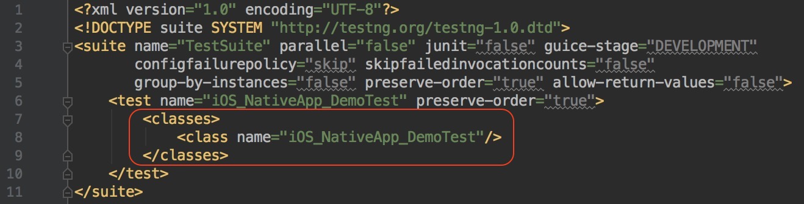
图11 testng.xml文件示例
第四步，在保证Appium Server已经启动的情况下，就可以运行testng.xml执行测试了。 测试开始后，首先会自动启动基于iOS 10.0的iPhone 7模拟器，然后依次自动完成WebDriverAgent（WDA）和被测Native App的安装。
WDA是由Facebook开源的支持iOS自动化的代理工具，其底层通过XCUItest实现自动化。
接着，就会自动运行被测Native App，并根据@Test函数中定义的步骤完成自动化测试的步骤和验证。
到此，我们的第一个基于Appium的Native App自动化测试用例就设计完了。
基于Appium开发你的第一个Web App的测试用例
有了Native App测试用例的设计基础，再来实现一个基于Appium的Web App自动化测试用例就简单得多了。
第一步，在上述的Maven项目中再创建一个类，并命名为“iOS_WebApp_DemoTest”，然后按照如图12所示的代码实现这个类。
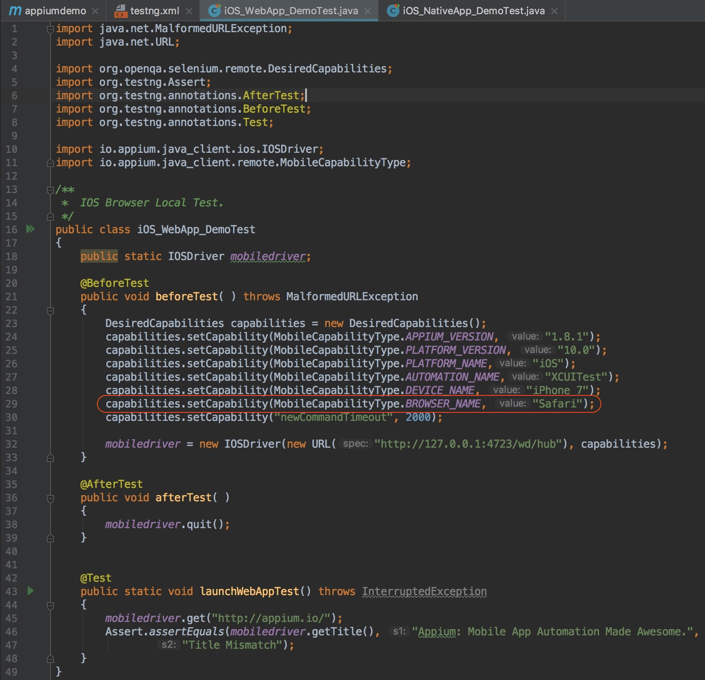
图12 Web App测试用例实例
代码的整体结构和上述Native App测试用例的完全一致，只有一个地方需要特别注意：代码的第29行，由于Web App是基于浏览器的测试，所以这里不需要指定App这个参数，而是直接用BROWSER_NAME指定浏览器的名字即可。
对于测试用例的主体部分，也就是代码的第45-47行就比较简单了，首先打开Safari浏览器并访问“http://appium.io/”，接着用断言方法assertEquals验证页面的Title是不是“Appium: Mobile App Automation Made Awesome.”。其中，实际页面的Title，可以通过mobiledriver的getTitle方法获得。
第二步，在testng.xml中添加这个Web App的测试用例，然后我们就可以在Appium Server已经启动的情况下执行这个测试用例了。
这个测试用例，首先会自动启动基于iOS 10.0的iPhone 7模拟器，然后自动打开Safari浏览器并访问Appium的官方网站。执行完成后的界面如下图13所示。
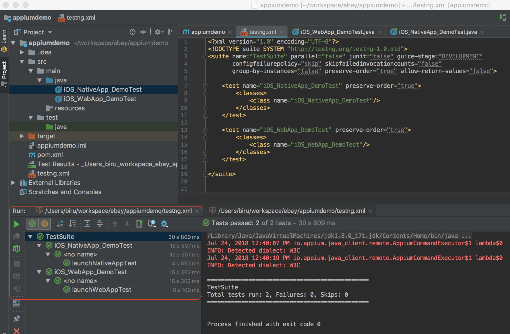
图13 测试用例执行完成的界面
进行到这里，我们基于Appium开发的第一个Web App的自动化测试用例，也就开发完成了。
经过前面Appium环境搭建，以及两个测试用例的设计，相信你已经对Appium有了一个感性的认识了。那么，Appium的实现原理又是怎样的呢？理解了Appium的使用原理，可以帮助你更好地使用这个工具，设计更加“有的放矢”的测试用例。
Appium的实现原理
Appium作为目前主流的移动应用自动化测试框架，具有极强的灵活性，主要体现在以下5个方面：
- 测试用例的实现支持多种编程语言，比如Java、Ruby、Python等；
- Appium Server支持多平台，既有基于Mac的版本，也有基于Windows的版本；
- 支持Web App、Native App和Hybird App三大类移动应用的测试；
- 既支持iOS，也支持Android；
- 既支持真机，也支持模拟器。
实际应用中，你可以根据项目情况灵活组合完成移动应用的自动化测试。比如，用Java写iOS上的Native App的测试用例，测试用例跑在Mac平台的iPhone虚拟机上；或者，用Python写Android上的Web App的测试用例，测试用例通过Windows平台跑在Android的真机上。
这样的组合还有很多很多。那你有没有想过，Appium为什么可以做到如此强大的灵活性呢？这就要从Appium的基本原理讲起了。
要真正理解Appium的内部原理，你可以把Appium分成三大部分，分别是Appium Client、Appium Server和设备端。这三部分的关系如图14所示。
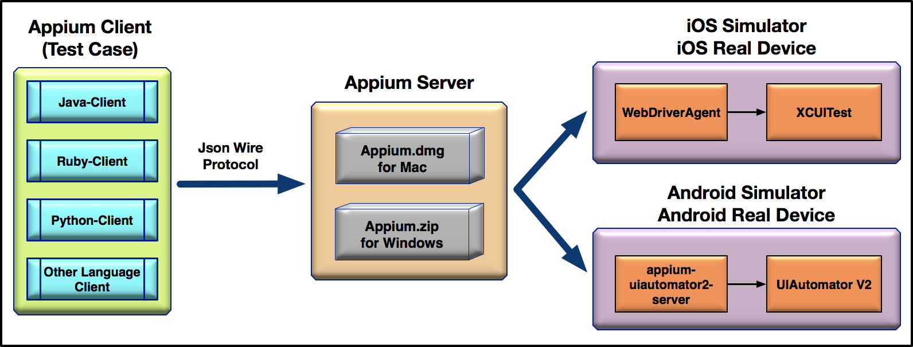
图14 Appium内部原理
我们先来看看处于中间位置的Appium Server。
Appium Server有Mac和Windows版本，也就是说Appium Server可以运行在Mac或者Windows电脑上。本质上，Appium Server是一个 Node.js 应用，接受来自Appium Client的请求，解析后通过WebDriver协议和设备端上的代理打交道。
- 如果是iOS，Appium Server会把操作请求发送给WebDriverAgent（简称WDA），然后WDA再基于XCUITest完成iOS模拟器或者真机上的自动化操作；
- 如果是Android，Appium Server会把操作请求发送给appium-UIautomator2-server，然后appium-UIautomator2-server再基于UIAutomator V2完成Android模拟器或者真机上的自动化操作。
Appium Client其实就是测试代码，使用对应语言的Client将基于JSON Wire协议的操作指令发给Appium Server。
整体来说，Appium的内部原理可以总结为：Appium属于C/S架构，Appium Client通过多语言支持的第三方库向Appium Server发起请求，基于Node.js的Appium Server会接受Appium Client发来的请求，接着和iOS或者Android平台上的代理工具打交道，代理工具在运行过程中不断接收请求，并根据 WebDriver 协议解析出要执行的操作，最后调用iOS或者Android平台上的原生测试框架完成测试。
总结
好了，我来总结一下今天的主要的内容：
目前网络上，Appium工具使用相关的资料都比较零散，为此我以最新版本的Appium Desktop 1.6.2和Appium Server 1.8.1为例，手把手地带你搭建了iOS环境，以及Appium测试环境，并介绍了如何通过Appium Inspector来定位页面元素。
搭建好了测试环境后，我分别针对Native App和Web App这两类移动应用，基于Appium实现了两个测试用例，这也是我在这个专栏里面，为你实现的第一个移动应用的测试用例。虽然测试需求比较简单，但是你也可以从中体会到移动应用测试用例设计的思想、方法。
最后，本着知其然知其所以然的原则，我介绍了Appium的实现原理：它属于C/S架构，Appium Client通过第三方库向Appium Server发起请求，Appium Server接受请求，然后和移动平台上的代理工具打交道，代理工具在运行过程中不断接收来自Appium Server的请求，并解析出要执行的操作，最后调用移动平台原生的测试框架完成测试操作。
思考题
我在这篇文章里面举的例子都是基于iOS的，建议你基于Android分别实现一个Web App和Native App的测试用例。
如果实现过程中，遇到了问题，或者有一些自己的想法，请给我留言讨论吧。
© 2019 - 2023 Liangliang Lee. Powered by gin and hexo-theme-book.